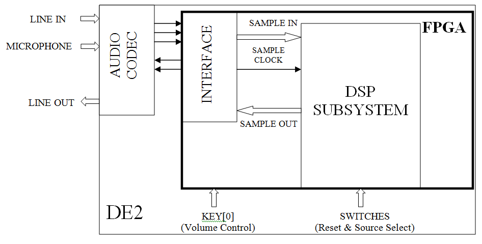
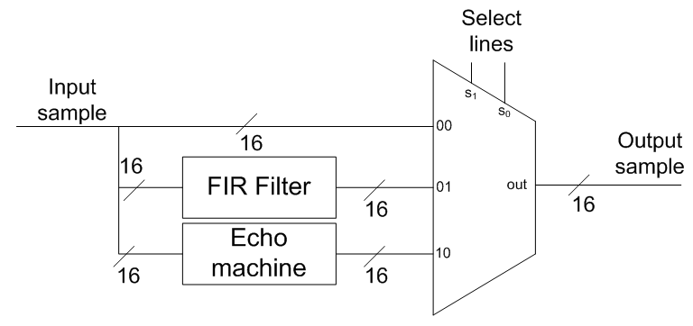
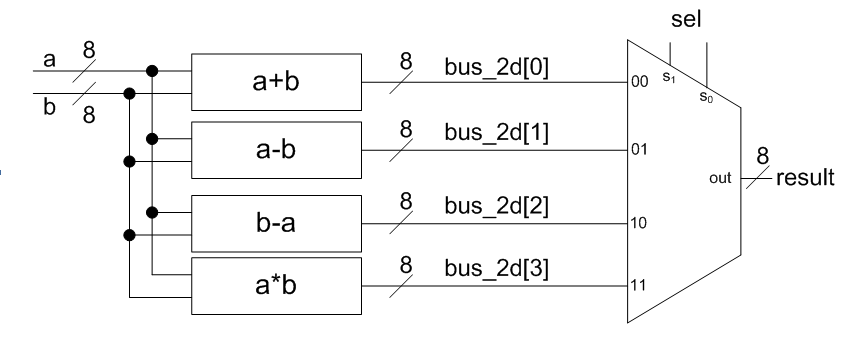
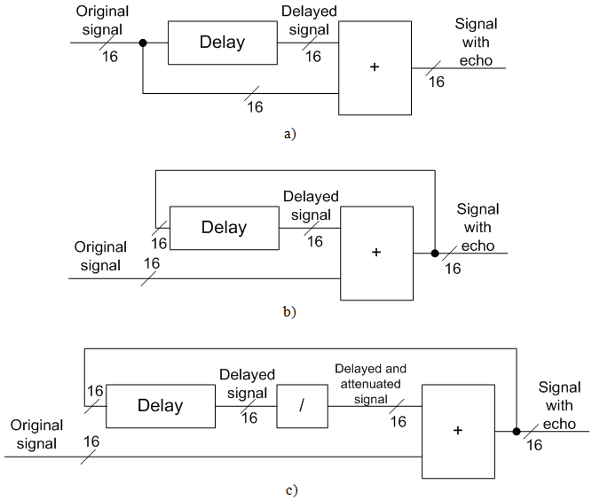

In this lab you will design two simple DSP systems: FIR filter and echo machine. You will use Matlab to determine coefficients for your FIR filter. You will then describe the FIR filter and the echo machine in Verilog and implement them in an FPGA on the DE2 development board. You will use the FIR filter to filter out noise from a sample waveform file. You will also explore the parameters of the echo machine and observe how they affect the output.
As part of this lab, you will use the audio codec chip on the DE2 board, to demonstrate the use of digital signal processing systems. You will also use Matlab to determine coefficients for the FIR filter that you will build in the lab.
The DE2 board contains an audio codec chip, which contains A/D and D/A converters. An analog audio signal from line-in or microphone inputs on the DE2 board can be converted to digital form using the A/D converter, and brought to the FPGA for processing. The processed digital signal can then be sent from the FPGA to the codec to be converted to analog signal using the D/A converter and sent to the line-out output of the board. You will be provided with an interface to the codec chip and will be required to read the digital data the chip presents to you, process it using an appropriate circuit, and send it back to the codec chip.
- System Description:
- The system you are building is shown in Figure 1 System Block Diagramfigure.. You are provided with a Quartus II starter project which already contains the interface to the codec and an empty module that serves as a placeholder for your design. Top-level system is described in system.vVerilog file. You should NOT modify this file. System’s components are described in the following sections.

| Figure 1: System Block Diagram |
- Interface to the Codec:
- A simple interface to the audio codec chip on the DE2 board is provided for you, so that you do not have to deal with low-level details of the chip configuration and data handling. The interface sets the configuration of the codec chip as follows:
- Sampling frequency: 8kHz
- Sample data-width: 16 bit, signed (2’s complement) numbers
The interface also selects an input source and controls volume of the output. The volume can be adjusted using the push-button KEY[0]. Pressing this button increases the counter that controls the volume. Once the counter reaches its maximum value it overflows and the volume drops to 0. The system can be reset using the switch SW[3]. Resetting the system sets the volume to the default (low) value. Input source can be selected between line-in and microphone. This selection is controlled by SW[2]. When SW[2] is in the off (0) position, line-in is selected, otherwise the microphone is selected.
The interface presents samples as 16-bit signed numbers. A new sample is available on every positive edge of the signal sample_clock. Your circuit (DSP subsystem) should process the sample and send it to the output on the next positive edge of sample_clock for the FIR filter, or a number of clock cycles later for the echo machine. In either case, you should send one sample per clock cycle to the output.
- DSP Subsystem:
- DSP subsystem is contained in the dsp_subsystem.vVerilog file. You should instantiate all sub-modules you need inside of this module. You are free (and encouraged) to create new Verilog files to describe parts of your system.
When you open dsp_subsystem.v you will notice that the output is directly connected to the input, which means that samples are simply forwarded to the output, without any processing. If you compile this project and download it to the DE2 board, you should be able to hear yourself when microphone is selected, and hear whatever is on the line-in input when line-in is selected by switch SW[2]. To complete the lab, you are required to implement an FIR filter and an echo machine. You will also create a multiplexer which will allow you to select what data gets sent to the output, as shown in Figure 2.

| Figure 2: DSP Subsystem Block Diagram |
Multiplexer can select between the original (unprocessed) signal, output of the FIR filter, or output of the echo machine. The select lines will be connected to the switches SW[1] and SW[0] of the DE2 board, so that you can control which signal is selected. Using a multiplexer in this fashion will help in debugging your circuit. For instance, if you can hear the sound coming from the FIR filter, but not the sound from the echo machine, that means you only need to fix the echo machine. On the other hand, if no sound can be heard regardless of the selected source, the problem might be in incorrectly plugged headphones or microphone, or too low volume setting.
- FIR Filter:
- In this part of the lab you will design an FIR filter that eliminates noise of a specific frequency. This will be the same filter whose coefficients you determined in the tutorial using Matlab. As discussed in the lectures, FIR filter consists of a number of registers, multipliers and adders. To make the design reusable, you will create a parameterizable FIR filter whose number of taps can be changed. To do this, you will require many wires to interconnect the modules. For example, each register outputs a 16-bit number. Therefore, if we have say 4 registers, there are 4 sets of 16-bit buses that need to be handled. To deal with this, you can declare an array of buses, as illustrated in the following code sample:
module buses_2_d (input [7:0] a, input [7:0] b, input [1:0] sel,
output reg [7:0] result);
// PAY ATTENTION: THE NEXT LINE IS COUNTERINTUITIVE, BUT CORRECT!
wire [7:0] bus_2_d [3:0]; // declares four 8-bit buses
assign bus_2_d[0] = a+b;
// the first 8-bit bus connects to the output of a+b
assign bus_2_d[1] = a-b;
// the second 8-bit bus connects to the output of a-b
assign bus_2_d[2] = b-a;
// the third 8-bit bus connects to the output of b-a
assign bus_2_d[3] = a*b;
// the fourth 8-bit bus connects to the output of a*b
// The following always block implements a multiplexer that selects
// among the four results
always @(*)
begin
case (sel)
2'b00: result = bus_2_d[0];
2'b01: result = bus_2_d[1];
2'b10: result = bus_2_d[2];
2'b11: result = bus_2_d[3];
endcase
end
endmodule
The above code implements the circuit shown in Figure 3 Circuits Produced by Verilog Codefigure.

| Figure 3: Circuits Produced by Verilog Code |
Please note that the above code is just an illustration of how arrays of buses are declared and used. It does not otherwise reflect the FIR filter you should design.
- Registers:
- Registers can be built using behavioral description, as discussed in class. To create a number of registers that can be parameterizable, you can either use for loops, or create a separate module that describes a register, and then use a generate statement to create an appropriate number of instances of the register
- Multipliers:
- To implement a multiplier, you will have to use one of the library components provided as a part of Quartus II Library of Parameterizable Modules (LPMs). LPM provides a way to implement many common digital circuit elements without having to specify their functionality. In addition, these modules are usually optimized for efficient implementation in FPGAs. To create a multiplier, follow these steps:
- Select Tools MegaWizard Plug-In Manager
- A window will pop-up, with the text “Create a new custom megafunction variation". Leave that text selected and click Next.
- In the next window on the left side you will find a list of different types of library modules. Click on the + sign next to the “Arithmetic" category, and then select LPM_MULT. Under “Which type of output do you want to create?" select “Verilog HDL". Under “What name do you want for the output file?" select multiplier.v. (Note that the multiplier.v file name is arbitrary, and you could use a different name). Click Next.
- Select widths of ‘dataa’ and ‘datab’ inputs to be 16 bits, because you will be multiplying two 16-bit numbers. Leave other options at their default values. Click Next.
- Under “Does the ‘datab’ input bus have a constant value?" leave the setting as “No" (Although our multipliers will be used to multiply with a constant, you would have to specify each constant through this interface, which is not practical). Under “Which type of multiplication do you want?" select “Signed". Leave other options at their default values. Click Next.
- On the next two pages leave all options at their default values. Click Next twice, then click Finish.
- The multiplier module is created for you. To see it, you can open the newly created file multiplier.v. You should see a module called multiplier, which you can use (i.e. instantiate) like any other module. You should not change anything in the multiplier.v file. You should simply use the newly created module in your code where needed.
You might be wondering why you cannot use the “*" Verilog operator to implement multiplication. The answer is that the “*" operator implements unsigned multiplication, whereas we need signed multiplication, because our samples and coefficients can be negative.
- Adders:
- You can create an adder by using the Verilog “+" operator. Unlike multiplication, addition is the same whether the input numbers are signed or unsigned, so the “+" operator is sufficient.
- Coefficients:
- To fully specify the FIR filter, all of its coefficients have to be specified. One simple way to declare all coefficients is to declare an array of buses and assign constant coefficients to them. This can be done either using an assign statement, or using an always block, in which case the array of buses has to be declared as regtype. The following example illustrates how one might specify four 8-bit coefficients:
reg [7:0]coeffs[3:0];
always @(*)
begin
coeffs[0]= 7;
coeffs[1]= -6;
coeffs[2]= 17;
coeffs[3]= 0;
end
Note that the numbers are specified as signed decimal numbers. Quartus will interpret them correctly and convert them into 2’s complement binary numbers. However, you will get warning messages about truncated bits, because the plain numbers like this are considered to be 32 bits wide. You can safely ignore these messages, at least for these numbers.
You will obtain correct values for coefficients from Matlab. Remember that you have to convert the coefficients into integers, and compensate for that after the multiplication, as discussed in class.
- Echo Machine:
- In this part of the lab you will design a simple echo machine. The basic idea is to delay the samples of an audio signal and then add them to the current samples, as shown in Figure (4a). In this design, only the original signal is stored in the delay line. Therefore, such a circuit would only achieve echo with constant delay. A better idea is to store the signal with echo into the delay line, which produces multiple echoes. This circuit is shown in Figure (4b). The problem with this design is that the samples get constantly added to existing ones, which eventually results in noise. To prevent that, the delayed component of the signal is divided by a constant factor, which produces a nice decaying echo of the input. This design is shown in Figure (4c).

| Figure 4: Block Diagram of Three Echomachine Designs |
Although division operation implemented in hardware can be quite expensive, recall that division by a number that is a power of 2 translates into a simple shift operation, so you should choose a division factor that is a power of 2 (i.e. 2, 4, 8, 16,...), and implement it using a shift operation. Do not forget that samples are signed numbers.
To implement the delay, you could use a series of registers connected to one another. This configuration is known as shift-register. One problem with this approach is that it requires excessive amount of registers to implement an audible delay (you will calculate just how many registers are required as a part of your lab report). Since the FPGA you are using contains only 1 register per logic block, such an implementation could potentially use up all the resources on the FPGA. Therefore, an alternative has to be found. The FPGA you are using also contains memory blocks, which can be used to store samples. Quartus II LPM library contains a component that can implement a shift register using memory blocks. To find it, start the MegaWizard Plug-In Manager (Tools→ MegaWizard Plug−In Manager) and under category “Memory Compiler", select “Shift Register (RAM-based)". Specify a name for the module to be generated (e.g shiftregister.v) and specify that you wish to generate Verilog HDL output. On the next page select both input and output data widths to be 16 bits.
The length of the shift register is specified in a rather peculiar way. There are two parameters offered to you: number of taps, and distance between the taps. The length of the shift register (i.e. the number of samples that will be stored in it) will be equal to the product of these two numbers. For example, the default values in those two fields are 32 and 8, which means that the shift register would contain 32*8 = 256 registers, and could therefore store 256 samples. It also means that it would take 256 clock cycles for the input to propagate to the output. Therefore, the delay that this shift register introduces would be 256 clock cycles. You should select these two numbers in such a way that they provide the delay you wish to achieve.
Once you have created the memory-based shift register, open its Verilog file to see the module declaration. If you used the suggested name, the file you are looking for is shiftregister.v. You should not change anything in this file. You can now instantiate the shift-register module in your module that implements the echo machine. You will notice that the produced shift register module has an output called taps. We will not use this output, and you can safely omit it when you create an instance of this module (i.e. when creating an instance, simply do not include this port in the port list).
Once you have the shift register, you just need to connect it appropriately to the divider and adder. Don’t forget to implement the divider using a simple shift operation. The adder can be implemented using the “+" Verilog operator.
- Activities:
- Pre-lab:
- [30 marks]
The following activities must be completed by each student independentlyand submitted as part 1 of the lab report at the start of class on the day of the lab.
- Considering that the sampling frequency is 8kHz, calculate the number of samples in a sound that lasts X milliseconds, where X is equal to the last two digits of your student number.
- Download the starter kit for lab 3 from the course web-site. The starter kit comes as a Quartus archive (.qar) file. The file can be opened by Quartus, at which point it expands into a full Quartus II project in a folder you specify. This project already contains the interface to the audio codec chip, and you should develop all your modules inside of this project. The top-level module for the whole system is system.v. You should not modify any existing files other than dsp_subsystem.v, but you are free (and encouraged) to create new files for your modules.
- Using Verilog HDL, design a 3-to-1 multiplexer that selects between three 16-bit inputs, as described in the lab description.
- Design a parameterizable FIR filter in Verilog HDL, as specified above. As a part of this, you should run the MegaWizard Plug-In Manager and create an instance of LPM_MULT library component, as specified in the lab description. Your FIR filter should have a parameter that specifies the number of taps. Set the default value for this parameter to 65 and initialize the coefficients based on the filter you developed during the tutorial. Don’t forget to convert the coefficients to integers.
- Design an echo machine depicted in Figure (4c). As a part of this, you should run the MegaWizard Plug-In Manager and create an instance of the memory based shift register, as specified in the lab description. Shift-register delay can be changed later, so don’t worry too much about selecting a specific value.
- Instantiate your FIR filter and the echo machine inside the dsp_subsystem.v file and connect them to the multiplexer, as depicted in Figure 2.
- Make sure that Quartus II compiles your design without any errors. Submit only the files you generated or modified as preparation. This, among other files, includes multiplier.v and shiftregister.v. Feel free to upload the whole project into a separate folder, so that you do not need to recreate the project in the lab.
- In the Lab: [50 marks]
WARNING:
The volume on the DE2 board is set low by default to protect your hearing. Only increase the volume if necessary. The volume can be increased by pressing KEY[0]. Only increase the volume a little bit at a time. In case you hear a loud noise coming out of the headset, promptly remove the headset. The system, including the volume can be reset by turning the switch SW[3] on. Reset the volume before playing the sound sample, and keep the headset off when you first play it. If your filter does not work, having the volume set on high may damage your hearing!
- Implement your circuit on the DE2 board
- Test the functionality of your FIR filter by playing the sample with the noise and listening to the output. Keep the volume low, and only increase it if necessary!
- Test the functionality of your echo machine. Experiment with the delay duration (i.e. shift-register length) and the division factor until you achieve an interesting effect. You may ask TAs for the “order of magnitude" guidelines in choosing these numbers.
- If either of your circuits does not work, debug it using simulation. You may also want to use the RTL Viewer (Tools→ Netlist Viewers→ RTL Viewer) to verify that all the connections have been made as you intended. Please note that large schematics may span several pages in the RTL Viewer. If that is the case, you can change pages in the top right corner of the RTL Viewer window.
- Demonstrate your working circuits to one of the TAs.
- Complete any experiments needed to answer the questions in the lab report section below.
- Lab Report: (Part 2)
- [20 marks] to be done in groups
- Describe what you did in this lab, and include the code used and answer the following questions:
- What values did you use for the echo delay and the division factor?
- There are a limited number of multipliers on the Cyclone II FPGA. How can you redesign the filter to use less multiplier units?
- Open the compilation report in Quartus, and report the following numbers:
- Total number of logic elements used by your circuit, total number of registers, total number of pins, the maximum number of logic elements that can fit on the FPGA you used
- What is a logic element, and what are the components that make up a logic element on the Cyclone II FPGA?
- What is the purpose of the mutiplexors in the lab design?
- How many memory bits does it take to store the samples in the delay circuit (shift register) in your echo machine?
- Considering that each logic block contains only one register, would your design have fit onto the FPGA had you not used the memory-based shift register?